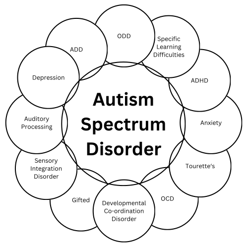

Who are we? 
We are a voluntary, parent led group who formed in 2012 because there were no local support groups in operation. We are all parents of a child/children on the spectrum.
We support the whole family, not just the child or young person with the diagnosis, and we welcome siblings and extended family members to participate in events and celebrations.
Support is available both online and in person but although we have lots of experience amongst members we are not professionals and will always signpost members to the relevant and most appropriate source for help.
Originally formed by a group of parents of teenagers, the group eventually evolved into its current format where we welcome people from ages 0-25, although in reality 16 is probably our upper limit for most people. You can of course become a volunteer at this age.
Membership was initially limited to those children attending schools within the Educational Pyramid of Uttoxeter and surrounding villages, but now we welcome families from the whole of Staffordshire and even Derbyshire.
As you can see there really are a spectrum of conditions which come under and alongside that of ASD, the list detailed below is not exhaustive by any means.
We welcome children who are either diagnosed with Autism and also those who are just starting out on the journey of Assessment.
Our aim is to support you and your child in the best way possible and this can come in many ways, but the experiences and advice of parents can often be the most informative and reliable source of information.
Learn more on our Facebook:
Before you are accepted into this group you will need to answer a few questions. This group is private and confidential and includes some professionals as well as parents/carers.
This page is totally open to the public and can be used by anyone in the wider community either to advertise services of interest or just to support autism families.